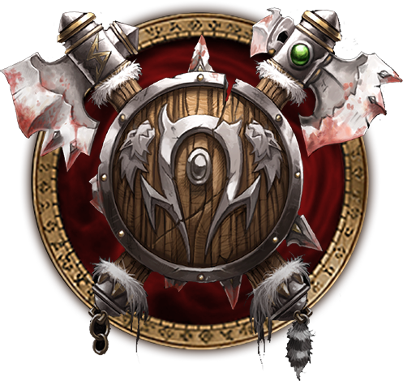
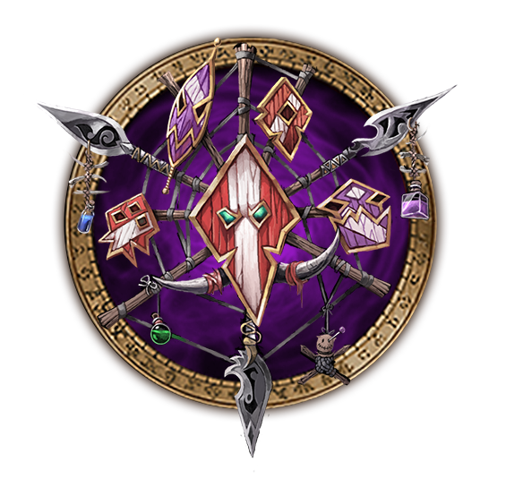
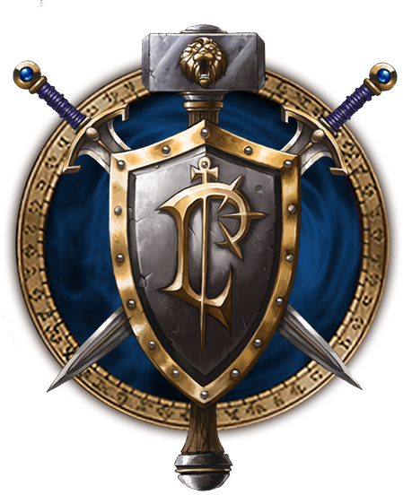
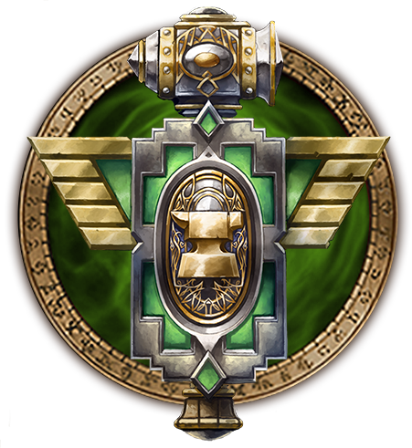
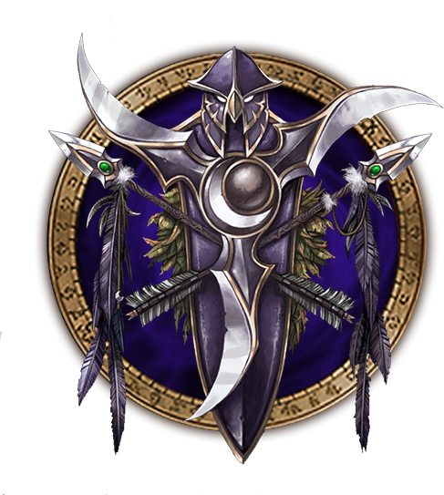

Consider this tips for PVP


There are a variaty of choices to select a race, on the two different facctions: Horde and Alliance, The most notable choices for Subtlety Rogues are Human and Night Elf for the Alliance and Orc or Undead for the Horde. Read on for a more detailed discussion on all of the available choices!
In WoTLK Classic, players have several choices when it comes to playing the Rogue class for PvP content. All available options are listed below in order of strength.
| Race | Description |
|---|---|
|  |
Orc: first available choice for the Rogue class in the Horde, and often considered one of the stronger choices, Orcs provided two powerful effects that can significantly enhance Player-versus-Player combat. The first racial effect we will talk about is Hardiness, an effect that reduces the duration of stun effects by 15%, which can make a difference between winning and losing in a situation when your trinket is on cooldown. The second interesting racial is Blood Fury, an effect that acts as an attack power increase for 15 seconds, scaling with level. The total attack power gained at level 80 would be 322. Blood FuryBlood Fury is a very strong racial for bursting down your enemies, especially against squishy casters! |

|
Undead: Undeads provide one strong racial effect that can severely enhance Player-versus-Player combat, plus a few average passives that can help along the way. Will of the Forsaken is a powerful racial which acts as a trinket, removing charm, sleep, and fear effects. Obviously, being able to remove multiple types of hard-CC is incredibly effective in PvP. Having more responses to crowd control is always a strong option!. The second racial that we will talk about is an all-time Undead trademark, Cannibalize. It allows you to feast upon the corpses of your fallen enemies. Not only does it regenerate your health points, but it also instills terror in those watching this unspeakable act. This racial effect is a very potent makeshift heal, however, it has fewer uses in arenas than in battlegrounds and the open world. Less spooky but still often relevant in PvP, Undead also have Shadow Resistance, an effect that reduces the chance to be hit by Shadow spells by 2%. While it won't be useful in every arena match, 2% isn't insignificant, and there are enough shadow casters in PvP to make this worth mentioning. Finally, If you feel like being a silent predator, Underwater Breathing will allow you to hide inside large bodies of water for a very long time, waiting for any unsuspecting prey that you have set your eyes upon; not super important in Arenas, but useful in Battlegrounds with water, or world PvP. |
|  |
Troll: Another choice for the Rogue class, Trolls provide two strong racial ability that can enhance your burst damage and other moderately powerful racials that can improve some aspects of our gameplay. The first of these is Berserking, which increases our attack speed by 20% for 10 seconds. This can be used to enhance our burst window, especially at the beginning of the fight. Berserking is a great racial effect that can be stacked with any other similar effects such as Bloodlust/Heroism and Slice and Dice, making it a really powerful burst tool. The second notable effect is Regeneration, which increases health regeneration by 10%, while also allowing us to regenerate 10% of our health during combat. Trolls are the only race that allows you to regenerate your health while in combat, making this racial effect a very strong self-sustain tool! Da Voodoo Shuffle is another useful racial for PvP, as it reduces the duration of all movement-impairing effects by 15%. This effect will protect you from classes that love to spam slow effects!. |
| Race | Description |
|---|---|
|  |
Human: Often considered the best choice for Alliance Rogues, Humans provide several strong racial effects that can improve your overall gameplay. Every Man for Himself effectively acts as a trinket, allowing you to clear all CC. This allows Humans to use double DPS trinkets, boosting their damage by a considerable amount. This is by far the strongest PvP racial in the entire game, as it allows you to considerably boost your damage! Perception greatly increases the chance to detect stealthed targets, giving us an advantage when fighting other classes that are capable of using stealth. This racial effect is great against other rogues or feral druids, as it allows you to engage first!. Humans also possess Diplomacy, an effect that increases your overall reputation gain by 10%. This effect can be quite handy when trying to grab items that require reputation grind. |
|  |
Dwarf: The second available choice for the Rogue class, Dwarves bring one strong racial effect that can aid you in fighting melee classes, plus some average racial effects that do not strongly impact your PvP performance. Dwarves' notable racial is Stoneform: this active skill offers us a 10% increase in armor and removes all poison, bleed, and disease effects, lasting for 8 seconds. They also have Frost ResistanceFrost Resistance, which reduces the chance to be hit by Frost spells by 2% — given the popularity of Frost Mages in Arena matches, this is often a useful PvP racial. |
|  |
Night Elf: Night Elves possess some very interesting racial effects that can greatly aid your stealth mechanics, as well as a few other PvP-relevant racials. The first racial effect we will talk about is Shadowmeld. While Rogues do not require another stealth mechanic, this racial effect can be used as a tool to remove your opponent's target from yourself. This effect can be very strong in certain situations. Elusiveness severely enhances our Stealth capabilities while also affecting Shadowmeld. This effect can become extremely strong when combined with our talents. Another racial effect worthy of note is Quickness, which reduces the chance to be hit by ranged and melee attacks by 2%. Quickness forces your enemy to have a higher Hit Rating in order for their attacks to be useful against you! They will require at least 7% Hit Chance to hit you if they are a melee class and an 8% Hit Chance if they are a caster class. Nature Resistance is a great racial effect against Druids and Shamans! It has an effect similar to Quickness, reducing the chance to be hit by Nature spells by 2%. The last unique racial effect available to Night Elves is Wisp Spirit. This effect turns you into a wisp upon death, increasing your movement speed by 75%. This racial has little significance in battlegrounds or arenas, but it can be very helpful in open-world PvP scenarios. |